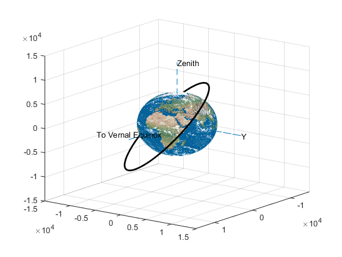

Problem 8
clear all; close all; clc
ro = [3207 5459 2714];
vo = [-6.532 .7835 6.142];
ti = 0;
tf = 3600*6;
mu = 398600;
options = odeset('RelTol',1e-5);
[T,Z] = ode45('OrbEq',[ti tf],[ro vo],options);
R = 6378;
A=imread('earth2.jpg');
[mytext,map]=rgb2ind(A,256);
mytext=flipud(mytext);
hold on;
[xx,yy,zz] = sphere(100);
colormap(map)
surface(R*xx,R*yy,R*zz,'CData',mytext,'FaceColor','texturemap','FaceLighting','phong','EdgeLighting','phong','EdgeColor','none');
hold on;
plot3(Z(:,1),Z(:,2),Z(:,3),'LineWidth',2,'Color','k')
axis([-1.5e04 1.5e04 -1.5e04 1.5e04 -1.5e04 1.5e04])
line([2*R 0 0],[0 0 0], [0 0 0],'LineStyle','--');text(2*R, -R, 0, 'To Vernal Equinox');
line([0 0 0],[0 2*R 0], [0 0 0],'LineStyle','--');text(0, 2*R, 0, 'Y');
line([0 0 0],[0 0 0], [0 0 2*R],'LineStyle','--');text(0, 0, 2*R, 'Zenith');
view( [2 1.5 0.8])
grid
r = [Z(:,1) Z(:,2) Z(:,3)];
v = [Z(:,4) Z(:,5) Z(:,6)];
for i = 1:length(T)
speed(i) = norm(v(i,:));
end
[V_a,j_a] = max(speed);
[V_p,j_p] = min(speed);
r_vec_p = r(j_p,:);
v_vec_p = v(j_p,:);
r_vec_a = r(j_a,:);
v_vec_a = v(j_a,:);
fprintf('Position at Perigee: [%0.f, %0.f, %0.f] km \n', r_vec_p)
fprintf('Velocity at Perigee: [%0.2f, %0.2f, %0.f] km/s \n', v_vec_p)
fprintf('Speed at Perigee: %0.2f km/s \n', norm(v_vec_p))
fprintf('Distance at Perigee %0.2f km \n', norm(r_vec_p))
fprintf('Speed at Perigee: %0.2f km/s \n', norm(v_vec_p))
fprintf(' \n')
fprintf('Position at Apogee: [%0.f, %0.f, %0.f] km \n', r_vec_a)
fprintf('Velocity at Apogee: [%0.2f, %0.2f, %0.f] km/s \n', v_vec_a)
fprintf('Speed at Apogee: %0.2f km/s \n', norm(v_vec_a))
fprintf('Distance at Apogee %0.2f km \n', norm(r_vec_a))
Position at Perigee: [-7386, -12746, -6421] km
Velocity at Perigee: [2.82, -0.29, -3] km/s
Speed at Perigee: 3.86 km/s
Distance at Perigee 16069.32 km
Speed at Perigee: 3.86 km/s
Position at Apogee: [3207, 5459, 2714] km
Velocity at Apogee: [-6.53, 0.78, 6] km/s
Speed at Apogee: 9.00 km/s
Distance at Apogee 6888.49 km
